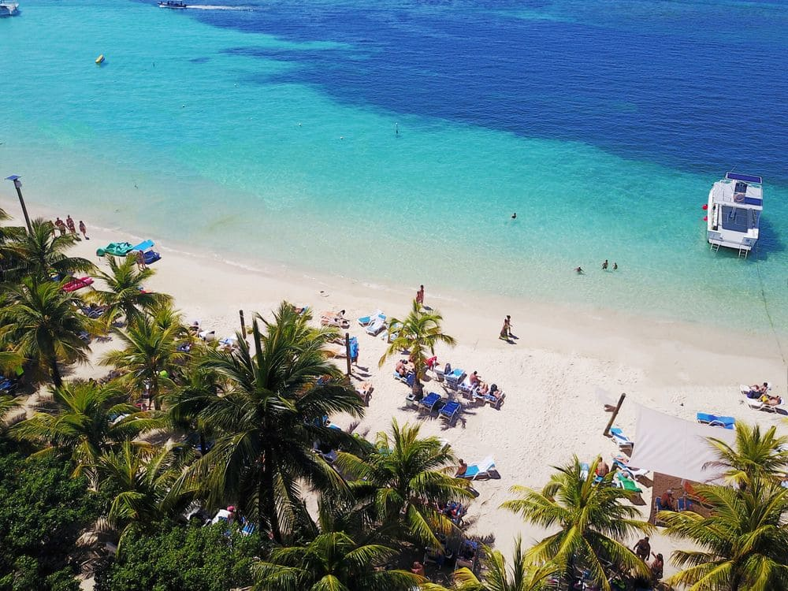

Somos el grupo 7, este es un sitio web hecho en HTML y CSS.
Roatán es una de las Islas de la Bahía de Honduras en el Caribe. Forma parte del enorme Sistema Arrecifal Mesoamericano y es conocida por las playas, los sitios de buceo y la fauna marina, incluido el tiburón ballena.
Roatán, una de las 3 Islas en Honduras
En el suroeste está la concurrida playa de West Bay, con un arrecife de coral cerca de la costa.
Turismo en Roatán
Los cruceros atracan en la capital de Coxen Hole y en la cercana Mahogany Bay.

Cultura en Roatán
Al este, hay asentamientos más pequeños, incluida la aldea garífuna de Punta Gorda.

Algunos datos sobre Roatán
- Superficie: 83 km²
- País: Honduras
- Población: 50,000 (2008)
- Mar: Caribe